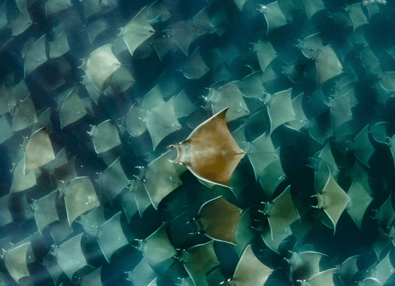

NATIONAL GEOGRAPHIC
Inside the growing U.S. movement to breed healthier, friendlier dogs
ANIMAL
Laura Sharkey breeds mixed-breed dogs, but they’re not goldendoodles,chiweenies , pomskys, or any other designer crosses. She doesn’t even aim for a specific build, size, or coat. “I’m not concerned with what they look like,” she says of her puppies. “I don’t want any genetic pressure other than health and temperament.”
Sharkey and Erica Pytlovany, both dog trainers, founded Bosun Dogs in 2019 after witnessing clients continually face severe behavioral challenges in adopted dogs. They regularly see owners face rehoming or even euthanizing their pets due to aggression issues.
“I would really love for all families who want a nice dog to be able to get a nice dog and we don’t have that right now,” says Sharkey, who also owns WOOFS! dog training centers in Arlington, Virginia. “I decided that the best way I could do that was to breed them.” Sharkey is part of the growing functional breeding movement, which raises dogs in small-scale settings to be friendly and healthy pets, with less focus on purebred status.
“I want to breed dogs for what I think is the actual highest function a dog has, especially in this country, which is as a companion animal,” says Sharkey. Her puppies, sold between eight and ten weeks old, average about $2,000 each, she says
In particular, Sharkey hopes to offer an alternative to purebred puppies, around a third of which are bred in high-volume kennels. And while some of these facilities are regulated by the USDA and meet standards such as Purdue University’s Canine Care Certified, many don’t pay as much attention to selecting healthy breeding dogs and providing adequate puppy enrichment as do small-scale breeders, says Sara Reusche, owner of Paws Abilities Dog Training in Rochester, Minnesota.
Breeding dogs to be good pets
Apart from toy breeds bred specifically as lap dogs, many breeds have backgrounds as working dogs: herding, guarding, hunting, and so on. But today, the primary purpose of dogs, especially in western countries, is as pets.
Yet few people breed dogs for this purpose, according to Joyce Briggs, treasurer of the Functional Dog Collaborative, a New Hampshire-based nonprofit. “The profile of the successful, really well-balanced family dog is not being looked at as a category,” says Briggs.
During the pandemic, when interest in pets spiked, many people saw an opportunity to breed dogs, says Carolyn Kelly, president of the Companion Dog Project, a nonprofit national breeder network. Yet these less-experienced breeders may lack the knowledge needed to carefully choose mates and socialize puppies, which can predispose them to health and behavior issues, Kelly says.
In fact, one of the main reasons Americans relinquish their dogs is due to behavior problems, which can be challenging and time-consuming. To address canine separation anxiety, for example, an owner might need to dramatically change their schedule to stay home with their animal while it’s gradually desensitized to longer periods left alone.
Hobby or preservation purebred breeders tend to pay more attention to health tests and puppy care, says Briggs; the American Kennel Club registered about 800,000 dogs from such breeders in 2021. But these operations can only offer so much supply; already, it’s common for these small scale breeders to have one or two year waitlists.
Comments :
- john Very good
- john Very good
Leave a Reply
Your email address will not be published. Required fields are marked*
Related posts:
-
A 4-second power nap These penguin parents survive on ‘microsleeps.’
Sleep-deprived human parents know the value of a quick nap, but it turns out chinstrap penguins have us all beat.
View article -
Can woolly bear caterpillars really predict the weather
As the seasons change and the world gets colder, most caterpillars in the United States and Canada will have already transformed into adults. But not woolly bears: Also called fuzzy wuzzies and woolly worms, these fascinating
View article -
122 devil rays joined in a wild mating ritual that lasted for hours. See it here.
Splashes at the surface give an indication of the commotion below. Beneath the waves, a tornado of hundreds of devil rays swirl in a dizzying dance that goes on for hours.
View article